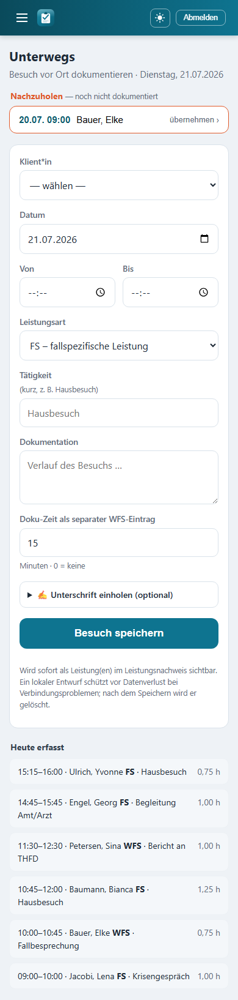

Unterwegs-Modus (mobil)¶

Der Unterwegs-Modus im mobilen Layout: nachzuholende Termine übernehmen, Besuch erfassen, Unterschrift einholen.
Der Unterwegs-Modus ist die mobile Vor-Ort-Dokumentation für den Außendienst (Hausbesuch, BEW/WG, Begleitung). Du rufst die Seite auf dem Smartphone oder Tablet auf, übernimmst mit einem Tipp deinen heutigen Termin, erfasst Von–bis, wählst optional den Zielbezug und lässt dir – falls gewünscht – direkt auf dem Gerät unterschreiben. Aus einem Besuch entstehen sofort ein oder zwei Leistungen im Leistungsnachweis. Alles ist team-gescopt, nichts läuft automatisch durch, und es werden keine Klientendaten auf dem Gerät gespeichert (reiner Online-Modus).
Aufruf: Menüpunkt „Unterwegs“. Die Seite ist auf schmale Displays optimiert (große Tippflächen, kein Auto-Zoom auf iOS).
Nur mit Klientenzugriff
Der Unterwegs-Modus ist an die Klientenarbeit gekoppelt. Rollen ohne Klientenbezug – konkret Verwaltung und Admin – werden auf die Startseite umgeleitet. Ohne hinterlegtes Mitarbeiter-Profil geht es ebenfalls zurück zur Startseite.
Termine übernehmen¶
Oben zeigt die Seite deine Termine heute – die Klienten-Termine, die für dich und den heutigen Tag im Kalender stehen (sortiert nach Beginn). Ein Tipp auf einen Termin füllt das Formular darunter vor: Klient*in, Datum, Von/Bis (aus der geplanten Terminzeit) und der Termin-Bezug werden gesetzt, die Seite scrollt zum Formular und der Cursor springt ins Feld Tätigkeit.
| Zustand des Termin-Chips | Bedeutung |
|---|---|
| „übernehmen ›“ | Noch nicht dokumentiert – antippen übernimmt ihn ins Formular. |
| „✓ dokumentiert“ (blass) | Zu diesem Termin gibt es bereits eine Leistung. Der Chip ist inaktiv. |
Darunter kann eine zweite Liste „Nachzuholen“ erscheinen: vergangene, noch nicht dokumentierte Klienten-Termine (rot umrandet, mit Datum). Sie funktionieren genauso – Tipp übernimmt Klient*in, Datum und Zeit des damaligen Termins.
Klient*in von Hand ändern
Wählst du im Formular manuell eine andere Klient*in, wird der Termin-Bezug gelöst (er passt dann nicht mehr) und die Zielliste neu geladen. Du musst also nicht zwingend über einen Termin einsteigen – ein Besuch lässt sich auch komplett frei erfassen.
Den Besuch erfassen¶
Das Formular „Besuch vor Ort dokumentieren“ enthält diese Felder:
| Feld | Pflicht | Hinweis |
|---|---|---|
| Klient*in | ✔ | Auswahlliste – nur Klient*innen deines Team-Zugriffs. |
| Datum | ✔ | Vorbelegt mit heute; für Nachträge änderbar. |
| Von / Bis | ✔ | Uhrzeiten (HH:MM). Aus einem übernommenen Termin vorausgefüllt. |
| Leistungsart | – | Standard FS; alternativ WFS, BAO, FUS, FZ, AL, KLE, FH. |
| Tätigkeit | – | Kurztext, max. 120 Zeichen (z. B. „Hausbesuch“). |
| Dokumentation | – | Freier Verlaufstext zum Besuch (mehrzeilig). |
| Zielbezug | – | Checkboxen der aktiven Ziele – siehe unten. |
| Doku-Zeit (WFS) | – | Minuten für die Dokumentation, Standard 15 – siehe unten. |
| Unterschrift | – | Mobile Unterschrift auf dem Gerät – siehe unten. |
Ohne Klient*in, Von- und Bis-Zeit wird nicht gespeichert; es erscheint der Hinweis „Bitte Klient*in, Von- und Bis-Zeit angeben.“
Was beim Speichern entsteht
Aus einem Besuch werden bis zu zwei Leistungen angelegt: (1) der Besuch selbst mit der gewählten Leistungsart (Standard FS) samt Tätigkeit, Verlaufsdoku und – falls vorhanden – Termin-Bezug; (2) die Doku-Zeit als separater WFS-Eintrag direkt im Anschluss. Beide erscheinen sofort im Leistungsnachweis. Die Bestätigung nennt Klient*in, Dauer, Leistungsart und ggf. die Doku-Minuten.
Zielbezug wählen¶
Sobald eine Klient*in gewählt (oder ein Termin übernommen) ist, blendet sich der Block „Zielbezug“ ein und lädt die aktiven Ziele genau dieser Klient*in als Checkboxen (mit Ziel-Art als kleinem Etikett). Kreuze an, worauf der Besuch eingezahlt hat – die Auswahl wird an der Besuchs-Leistung als Zielbezug der ZLP gespeichert.
Nur Ziele dieser Klient*in
Die Zielliste kommt aus derselben Quelle wie das Desktop-Doku-Modal und ist streng team-gescopt. Es lassen sich nur Ziele dieser einen Klient*in verknüpfen – ein Cross-Klient-Bezug ist ausgeschlossen. Gibt es keine aktiven Ziele, steht dort „Keine aktiven Ziele hinterlegt.“
Doku-Zeit als WFS¶
Die Zeit fürs Dokumentieren wird getrennt vom Besuch als eigener WFS-Eintrag geführt (weitere fallspezifische Leistung). Das Feld „Doku-Zeit als separater WFS-Eintrag“ steht standardmäßig auf 15 Minuten (Schritte à 5, max. 240). Diese Minuten werden direkt im Anschluss an die Bis-Zeit des Besuchs als zweite Leistung mit der Tätigkeit „Dokumentation“ gebucht.
Steht das Feld auf 0, entfällt der WFS-Eintrag – dann entsteht nur die Besuchs-Leistung.
Sauber getrennt
Die Trennung Besuch (FS) ↔ Doku (WFS) bildet die Vorgaben ab: die reine Kontaktzeit und die anschließende Verlaufsdokumentation sind zwei unterschiedliche Leistungsarten und stehen als zwei Zeilen im Nachweis.
Mobile Unterschrift¶
Unter „✍️ Unterschrift einholen (optional)“ klappt ein Unterschriftsfeld auf. Klient*in bzw. Sorgeberechtigte unterschreiben mit dem Finger direkt auf dem Display; die Unterschrift wird beim Speichern am Besuch abgelegt und erscheint später auf dem Nachweis. Mit „Löschen“ lässt sich das Feld zurücksetzen.
| Element | Verhalten |
|---|---|
| Zeichenfeld | Touch und Maus, ohne Extra-App. |
| „Löschen“ | Setzt das Feld zurück (Status „noch leer“). |
| Übernahme | Beim Loslassen automatisch – kein zusätzlicher Klick nötig. |
Freiwillig und quittierend
Die Unterschrift ist optional – sie quittiert einen Besuch, ist aber keine Voraussetzung fürs Speichern. Serverseitig wird strikt geprüft: akzeptiert wird nur eine PNG-Unterschrift bis ca. 200 KB (Schutz gegen Missbrauch als Datenspeicher). Zusammen mit der Unterschrift wird der Zeitpunkt festgehalten.
Nichts läuft automatisch durch¶
Bestätigung je Besuch
Es fließt nichts automatisch in den Leistungsnachweis. Jeder Besuch wird einzeln über „Besuch speichern“ bestätigt – erst dann entstehen die Leistung(en). Es gibt keinen Hintergrund-Import und keine Serienbuchung aus dem Unterwegs-Modus. Die vorausgefüllten Werte aus einem Termin sind ein Vorschlag, den du vor dem Speichern prüfst und bei Bedarf korrigierst.
Zur Kontrolle listet der Bereich „Heute erfasst“ unten alle manuell (nicht automatisch) an diesem Tag erfassten Besuche mit Uhrzeit, Klient*in, Leistungsart, Tätigkeit und Dauer.
Datenschutz: keine Daten auf dem Gerät¶
Reiner Online-Modus
Der Unterwegs-Modus speichert keine Klientendaten auf dem Gerät – keine Offline-Ablage, kein lokaler Cache. Alles läuft live gegen den Server. Geht die Verbindung verloren, bleibt der Besuch schlicht ungespeichert, statt lokal Klientendaten zu hinterlassen.
Weitere Schutzmechanismen, die auch hier greifen:
- Team-Scoping: In der Klient- und der Zielauswahl erscheinen ausschließlich Klient*innen bzw. Ziele deines Team-Zugriffs. Ein Speichern zu fremden Klient*innen wird serverseitig abgewiesen.
- Datensparsamkeit (Art. 9 DSGVO): Die Seite zeigt nur, was für die Vor-Ort-Erfassung nötig ist – Terminliste, Auswahllisten, das Erfassungsformular. Sensible Verlaufsinhalte werden nicht auf dem mobilen Gerät zwischengelagert.
- Nachvollziehbarkeit: Erfasste Leistungen und Verlaufsdoku laufen in dieselbe Erfassung wie am Desktop und sind damit im Nachweis und Audit-Log nachvollziehbar (wer, wann).
Für Neugierige: Technik dahinter¶
Nur zur Nachvollziehbarkeit
Diese Seite dient dem Verständnis; für die Bedienung brauchst du sie nicht. Die Namen unten entsprechen dem echten Code.
- Seiten-View:
nachweis/views_feld.py→feld_heute(request). Guard überservices.ohne_klientenarbeit(request.user)undservices.mitarbeiter_fuer(request.user)(sonst Redirect aufnachweis:start). Lädt heutigeTermin-Objekte (mitarbeiter=me,datum=heute,klient__isnull=False), markiert dokumentierte viat.dokumentationen.exists(), holt Nachhol-Termine ausservices.undokumentierte_termine(me)(nurdatum < heute), die heute manuell erfassten Leistungen (Leistung … .exclude(auto=True)) und die Klientenliste überservices.klienten_fuer(request.user). - Speichern:
feld_speichern(request)(@require_POST). Auflösung der Klient*in strikt überservices.klienten_fuer(...)(pk-Guard gegen leeren String); Leistungsart fällt bei ungültigem Wert aufLeistungsart.FSzurück. Termin-Bezug nur bei eigenem Termin derselben Klient*in (Termin.objects.filter(pk=tid, mitarbeiter=me, klient=klient)). - Anlegen: Erzeugt die Besuchs-
Leistung(mittaetigkeitgekürzt auf 120 Zeichen,dokumentation,termin), setzt den Zielbezug überleistung.ziele.set(Ziel.objects.filter(klient=klient, pk__in=…)), übernimmt eine gültige Unterschrift (data:image/png;base64,…, ≤ 200 000 Zeichen) inLeistung.unterschrift/unterschrieben_am, und legt beidoku_minuten > 0eine zweiteLeistungmitleistungsart=Leistungsart.WFS, Tätigkeit „Dokumentation“ an (Standard 15 Min ab der Bis-Zeit). - Modelle:
nachweis/models.py→Leistung(u. a.leistungsart,betreuer,beginn/ende,terminalsSET_NULL-FK,unterschrift/unterschrieben_am,auto,dauer_stunden),Leistungsart(TextChoices: FS, WFS, BAO, FUS, FZ, AL, KLE, FH),Termin,Ziel. - Ziel-Endpunkt:
nachweis/views_ziele.py→api_ziele(request)– liefert die aktiven Ziele der Klient*in (id, titel, art), team-gescopt überservices.klienten_fuer(...). - Template:
nachweis/templates/nachweis/feld.html(Termin-Chips, Erfassungsformular,<details>-Unterschriftsblock mit Canvas-Pad ohne Bibliothek, „Heute erfasst“-Liste, JS zum Vorausfüllen und Ziele-Laden). - URLs:
nachweis/urls.py→nachweis:feld_heute(unterwegs/),nachweis:feld_speichern(unterwegs/speichern/).